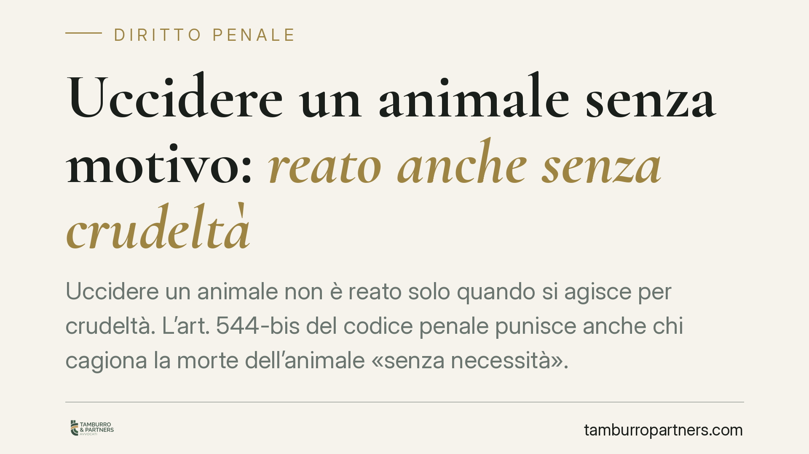

Uccidere un animale senza motivo: reato anche senza crudeltà
Uccidere un animale non è reato solo quando si agisce per crudeltà. L'art. 544-bis del codice penale punisce anche chi cagiona la morte dell'animale «senza necessità». Una recente pronuncia della Terza Sezione Penale della Cassazione torna sulla distinzione tra le due condotte, con conseguenze rilevanti sul piano probatorio per cacciatori, proprietari di animali e, più in generale, per chiunque abbia a che fare con la vita animale.

Il quadro normativo
L'art. 544-bis del codice penale, introdotto dalla legge 20 luglio 2004, n. 189, punisce «chiunque, per crudeltà o senza necessità, cagiona la morte di un animale» con la reclusione da quattro mesi a due anni.
Il punto decisivo è la congiunzione «o» che separa le due espressioni. Si tratta di una disgiuntiva, non di un'endiadi: le due formule non descrivono un'unica condotta qualificata (uccidere con crudeltà e senza necessità), ma due ipotesi autonome e alternative. È sufficiente che ricorra una sola delle due per integrare il reato.
Ne discende una conseguenza spesso sottovalutata: non occorre dimostrare la crudeltà del gesto. Chi uccide un animale «senza necessità» risponde penalmente anche quando l'azione sia stata rapida, indolore, priva di qualsiasi accanimento.
Il concetto di «necessità»
La giurisprudenza interpreta la «necessità» in senso restrittivo. Non basta una generica utilità o un vantaggio soggettivo di chi agisce: deve trattarsi di una situazione che renda l'uccisione l'unica condotta ragionevolmente esigibile, come la difesa da un'aggressione, lo stato di necessità o l'esercizio di attività espressamente autorizzate dalla legge (si pensi alla caccia nei limiti consentiti o agli abbattimenti sanitari).
Fuori da queste cornici, l'uccisione resta penalmente rilevante a prescindere dalle modalità.
La distinzione secondo la pronuncia
Secondo l'orientamento espresso dalla recente pronuncia della Terza Sezione Penale, le due condotte si differenziano anche sul piano dell'elemento soggettivo.
L'uccisione «per crudeltà» presupporrebbe un dolo specifico: la volontà dell'agente deve essere sorretta dall'intento di infierire, da una particolare insensibilità rispetto alla sofferenza dell'animale.
L'uccisione «senza necessità», invece, richiederebbe il solo dolo generico: è sufficiente la coscienza e volontà di cagionare la morte, unite alla consapevolezza dell'assenza di una causa giustificativa.
Va precisato che questa ricostruzione riflette l'impostazione della pronuncia in esame e non va letta come un dato normativo pacifico: la classificazione dell'elemento soggettivo nelle due ipotesi è stata affrontata dalla dottrina e dalla giurisprudenza con accenti non sempre uniformi.
Implicazioni pratiche
La differenza non è teorica. Si riflette sull'onere probatorio e, quindi, sulla strategia di accusa e difesa.
Contestare l'uccisione «senza necessità» è, per l'accusa, un percorso probatorio più agevole: non deve dimostrare una finalità crudele, ma soltanto che l'animale è stato ucciso in assenza di una causa giustificativa.
Per chi svolge attività venatoria, questo significa che la regolarità formale dell'azione di caccia non è sufficiente: occorre che l'abbattimento rientri effettivamente nei limiti di specie, periodi e modalità autorizzate. Un colpo esploso fuori da tali limiti può integrare il reato anche senza alcun intento crudele.
Per i proprietari di animali, il tema si pone con frequenza nei casi di soppressione di cani o gatti al di fuori delle ipotesi sanitarie previste. La scelta di «liberarsi» di un animale non costituisce, di per sé, una necessità in senso giuridico.
Cosa fare in concreto
- Verifica preventiva. Prima di qualsiasi condotta che incida sulla vita di un animale, accerta se esista una base normativa o veterinaria che la autorizzi.
- Documenta. Conserva autorizzazioni venatorie, prescrizioni veterinarie, certificazioni sanitarie e ogni elemento che possa provare la ricorrenza di una necessità effettiva.
- Non confidare nell'assenza di crudeltà. L'indolorità del gesto non esclude il reato quando manca la necessità: sono profili distinti.
- Affronta entrambi i profili. In sede difensiva, non è sufficiente negare la crudeltà: va esaminato anche il profilo della necessità, perché è su questo che spesso si concentra la contestazione.
- Ricostruisci il contesto fattuale. La qualificazione dipende dalle circostanze concrete dell'azione, che vanno ricostruite con precisione fin dalle prime fasi.
Nota di cautela
Gli estremi della pronuncia citata (numero e data) sono da verificare presso le fonti ufficiali prima di qualsiasi utilizzo in sede tecnica. Il principio di fondo — l'autonomia delle due condotte e la rilevanza penale dell'uccisione senza necessità — trova comunque ampio riscontro nell'interpretazione dell'art. 544-bis c.p.
---
Contributo informativo a cura di Tamburro & Partners Avvocati. Non costituisce parere legale.
Ogni condominio ha una storia a sé.
Se gestisci un'amministrazione e vuoi un confronto su una specifica questione condominiale, scrivi allo studio. Ti rispondiamo entro un giorno lavorativo.